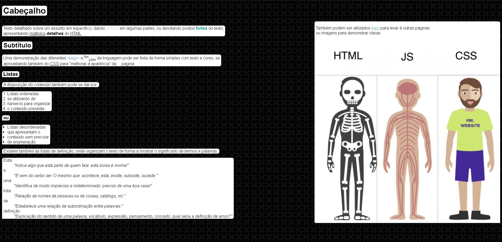

Artigo X
Esta é uma interface base para uma postagem de blog / artigo que possui várias outras conexões, incluindo outra página, dedicada a mostrar e falar sobre os diferentes elementos de HTML e CSS, um link para o youtube, um para o twitter, e outro para a Twitch. A adição de fotos e outras imagens também é possível, pois está tudo contido dentro do mesmo div, permitindo que os arquivos de imagem fiquem bem colocados entre os blocos de texto.
Site de demonstração do HTML:
A página pode apresentar comprimentos diversos, podendo ter âncoras que levam o usuário desde o topo até o fim da página.
| Tabela | de | Demonstração |
|---|---|---|
| As | subdivisões | podem |
| ser | personalizadas | e |
| utilizadas | para | organização |
| o | tamanho | pode |
| variar | também | |
Podem também
ser utilizadas
diversas fontes
em diversos contextos
, variando para que
se façam
as combinações
mais agradáveis.
Esse é o fim mesmo